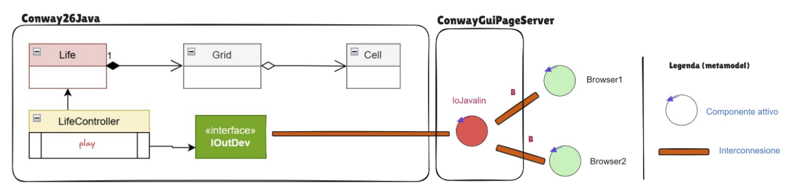

https://github.com/SignedSnow0/IngegneriaDeiSistemiSoftwareM
https://github.com/SignedSnow0/IngegneriaDeiSistemiSoftwareM
La gui consiste di una pagina html, sono presenti bottoni di controllo del sistema e la griglia del gioco: codice. Il server IoJavalin gestisce le richieste http e websocket per il frontend. La classe LifeGameInteraction gestisce la comunicazione tra il frontend e lo stato interni ad esso, definiti nello sprint 1. Come discusso nei requisiti, dato che lo stato deve aggiornarsi continuamente, LifeGameInteraction e la pagina comunicano tramite websocket, contenuta in OutInGuiInteraction.

Dato che l'applicazione è ora ad uno stato più completo, è possibile effettuare end-to-end testing per verificare il funzionamento dell'interazione tra le parti.
Come richiesto dal cliente, l'applicazione è contenuta in un'immagine docker: Dockerfile.
https://github.com/SignedSnow0/IngegneriaDeiSistemiSoftwareM